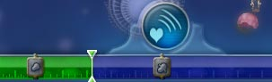
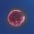
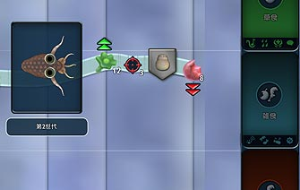

目次 > ゲームについて > シミュレーション攻略 > SPORE > ステージ攻略 > 細胞ステージ
| 概要 | 情報 | ステージ攻略 |
| コレクション一覧 | 継承アビリティー一覧 | アチーブメント一覧 |
| SPORE 攻略へ | 目次へ戻る |
| [ 細胞ステージ ] [ クリーチャーステージ ] [ 集落ステージ ] [ 文明ステージ ] [ 宇宙ステージ ] |
| 目的 |
| 上陸するために必要なDNA ポイントをためるために、ひたすら食べてください。  画面下のバーがいっぱいになったら、クリーチャーに脳みそが生まれ、上陸ができます。 |
| 肉食 草食 雑食 |
| 肉食のクリーチャーは、画面を漂っている肉片や自分よりも小さなクリーチャーを食べることができます。 草食のクリーチャーは、画面を漂っている緑色の藻(?)のようなものを食べることができます。 雑食のクリーチャーは、どちらも食べることができますが、「雑食ができる」ことと「雑食の継承アビリティーが引き継げる」のとは別物なので注意してください。  (肉片と藻) 雑食になるには、肉食と草食の口の両方をつけるのが一番簡単です。雑食のパーツ「プロボセス」を入手するまでがんばるのもいいのですが、時間がかかるのでおすすめしません。  肉食、もしくは草食から雑食へ変えるには、まず雑食ができる状態にしてください。そして、肉食だったクリーチャーなら草を食べ、草食なら肉を食べ、進化の矢印が雑食の範囲に入るようにしてください。雑食の範囲に入った状態でクリーチャーステージに行くと、雑食になります。 |
| 入手可能パーツとその階層 |
| 階層 | クリーチャー | 入手可能パーツ |
| 1 | ミンノ コールディ |
なし |
| 2 | ミンノ チョンパー ボーキィ ゴールディ |
スパイク |
| 3 | チョンパー ゴールディ シャイスター スパイクド・シャイスター ブースター |
ジェット スパイク ジェット |
| 4 | ブースター チョンパー シャイスター ショルダーボーン スクワーディー |
ジェット ポイズン |
| 5 | ショルダーボーン スクワーディー ピンキー パンキー ノーゼイ スタバー |
ポイズン シリア プロポセス |
| 6 | ピンキー スクワーディー スタバー ノーゼイ スタッベッラ ダーキー |
プロポセス |
| 7 | ダーキー ノーゼイ スタッベッラ ジョーヘッド パジー スクウィッギー |
エレクトリック |
| 8 | ダーキー スクウィッギー ジョーヘッド バジー ニードルバジィ パフィッシュ |
エレクトリック |
| 9 | パフィッシュ ジョーヘッド スクウィッギー ジェッスター メガマウス マー ジュニア |
ジェット |
| 10 | メガマウス マー ジェッスター ジュニア プロートォ パー スノーフ |
ジェット? |
| [ 細胞ステージ ] [ クリーチャーステージ ] [ 集落ステージ ] [ 文明ステージ ] [ 宇宙ステージ ] |
| 概要 | 情報 | ステージ攻略 |
| コレクション一覧 | 継承アビリティー一覧 | アチーブメント一覧 |
| ページの上部へ | SPORE 攻略へ | 目次へ戻る |